Le portfolio / Renov Bati
Les lieux.détails. Rénovation intérieure, façades, toiture, menuiserie et aménagement extérieur : découvrez les réalisations de Renov Bati.
Une façade, son relief Cuisine, lignes & lumière La pierre rencontre le noir À l’ombre des lignes Une salle de bains réinventée La maison s’ouvre au jardin La matière au bord de l’eau Bois, métal, transparence Le détail de la toiture Une pièce de vie en plus La façade retrouve sa ligne Carrelage en grande surface Deux vasques, un ensemble 01 / Façade & extérieurs
Une façade, son relief Enduit clair, couverture sombre et terrasse minérale : les lignes de la maison se lisent dans la lumière.
Façade claire Couverture sombre Terrasse minérale Parlons de votre projet 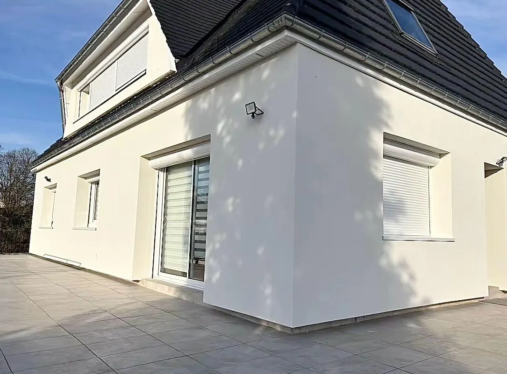
Maison à façade claire, couverture sombre et terrasse carrelée, photographiée au soleil. 02 / Rénovation intérieure
Cuisine, lignes & lumière Façades mates, plans de travail clairs et éclairage intégré : deux vues d’un espace coordonné jusque dans ses finitions.
Éclairage intégré Façades coordonnées Plans de travail clairs Parlons de votre projet 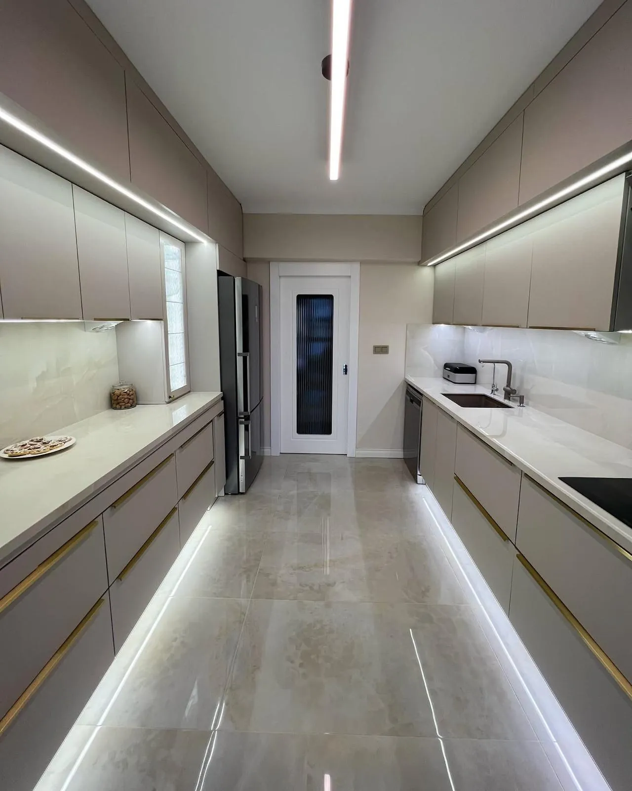
Cuisine terminée avec des meubles gris, des plans clairs et un éclairage intégré. 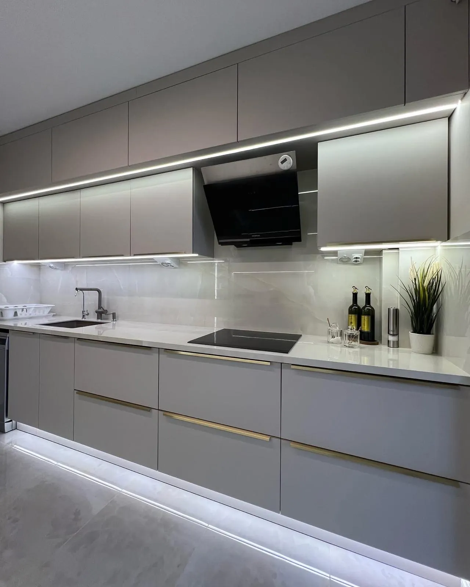
Détail du plan de travail, de la hotte et de l’éclairage de la cuisine. 03 / Rénovation intérieure
La pierre rencontre le noir Revêtements veinés, vasques noires et douche vitrée. L’éclairage sous le meuble souligne les volumes de la pièce.
Revêtements veinés Double vasque noire Douche vitrée Parlons de votre projet 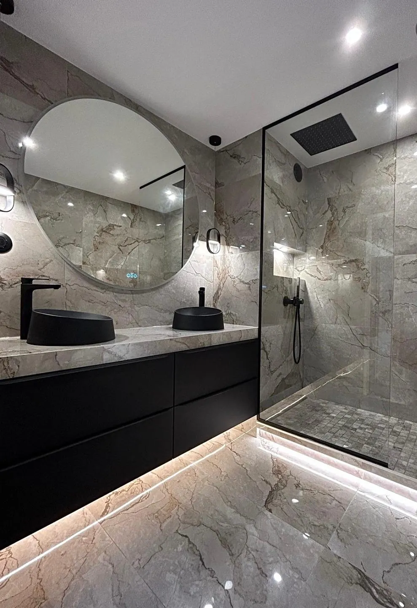
Salle de bains avec carrelage veiné, double vasque noire, miroir rond et douche vitrée. 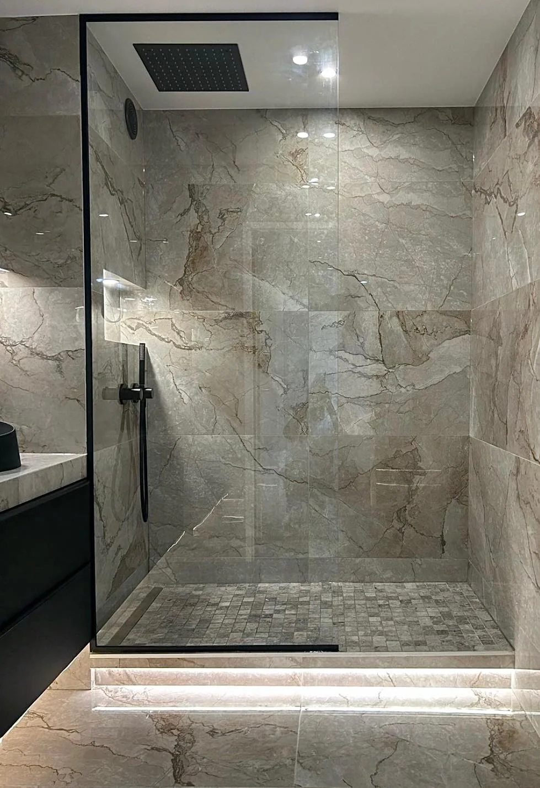
Détail de la douche vitrée : carrelage veiné, mosaïque au sol et robinetterie noire. 04 / Aménagement extérieur
À l’ombre des lignes Une terrasse carrelée et une pergola anthracite composent un espace de transition entre la maison et la pelouse.
Terrasse carrelée Pergola anthracite Liaison avec le jardin Parlons de votre projet 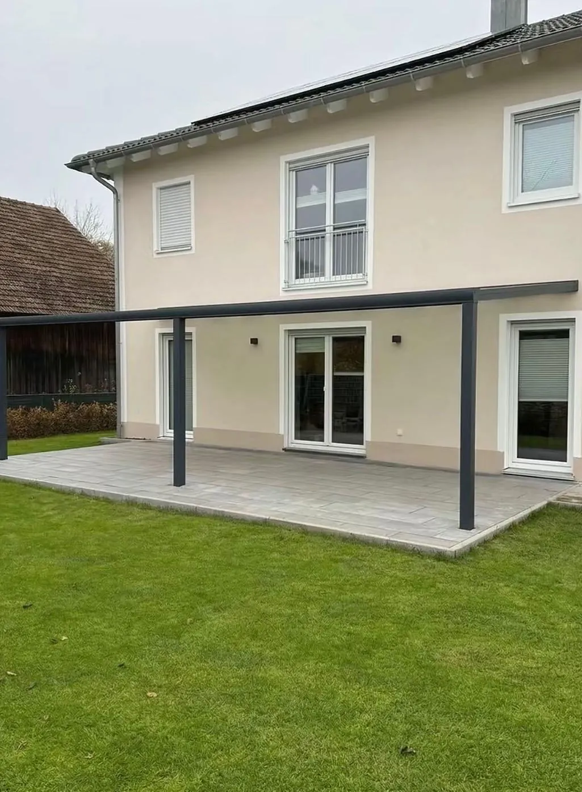
Terrasse carrelée sous une pergola anthracite devant une façade claire et une pelouse. 05 / Rénovation intérieure
Une salle de bains réinventée Baignoire îlot, douche vitrée, niches murales et revêtements coordonnés. La transformation de cette pièce est visible dans l’avant/après.
Baignoire îlot Douche vitrée Revêtements coordonnés Explorer l’avant / après Parlons de votre projet 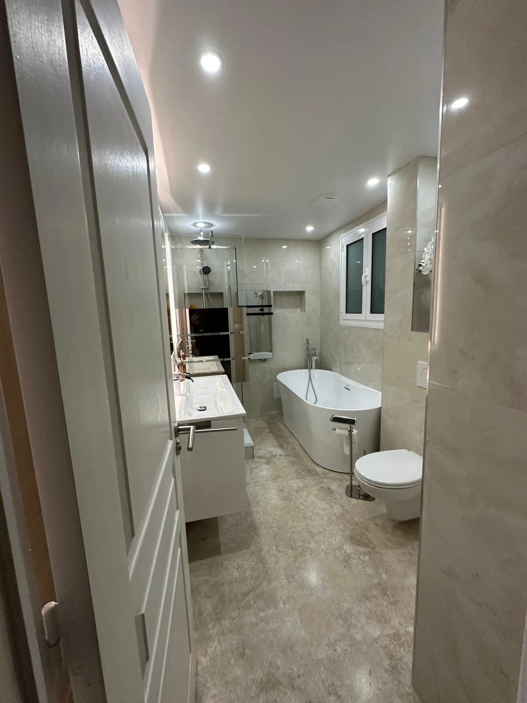
Salle de bains rénovée avec une baignoire blanche, une douche vitrée et un carrelage beige. 06 / Menuiserie & extension
La maison s’ouvre au jardin Une structure anthracite et de larges surfaces vitrées prolongent la maison vers le jardin.
Structure anthracite Parois vitrées Liaison intérieur / extérieur Parlons de votre projet 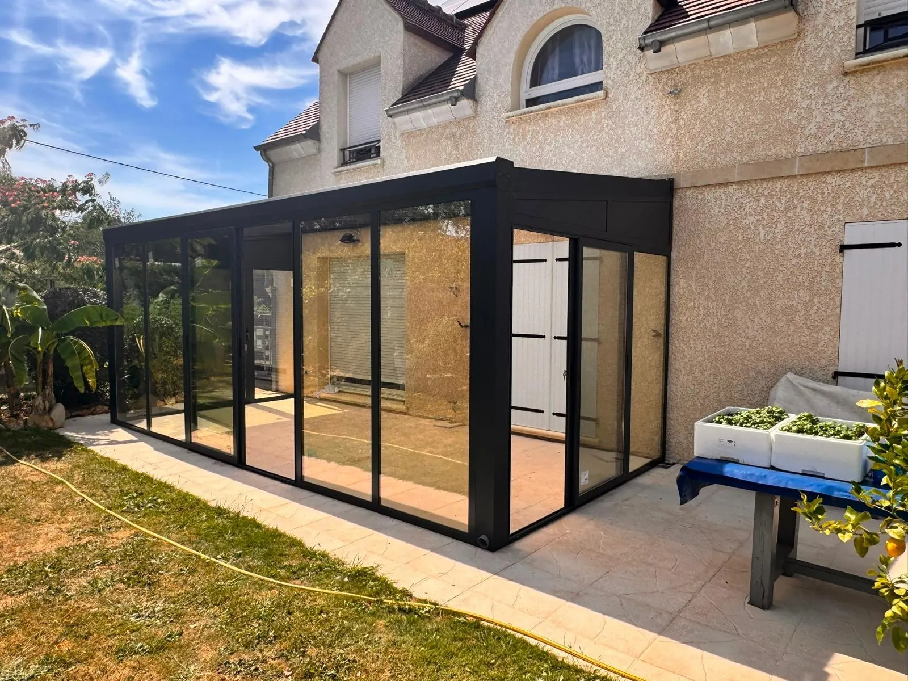
Véranda à structure anthracite et baies vitrées, adossée à une maison. 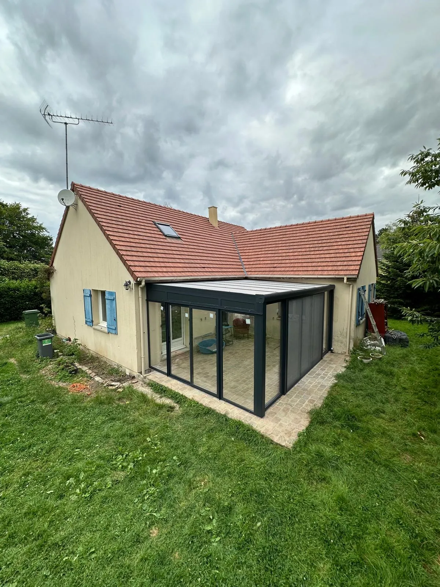
Véranda à structure sombre et parois vitrées, au pied d’une maison et de son jardin. 07 / Aménagement extérieur
La matière au bord de l’eau Un dallage clair compose la plage de piscine. Les bordures de galets dessinent la transition avec le jardin.
Dallage clair Plage de piscine Bordures de galets Parlons de votre projet 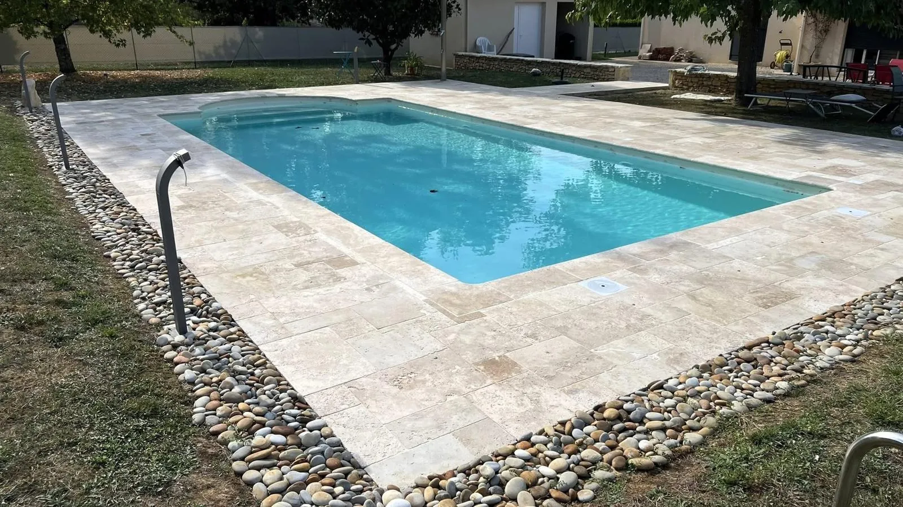
Piscine entourée d’un dallage clair et d’une bordure de galets. 08 / Menuiserie & aménagement
Bois, métal, transparence Des marches en bois, une structure métallique et un garde-corps vitré mettent en relation les deux niveaux.
Marches en bois Structure métallique Garde-corps vitré Parlons de votre projet 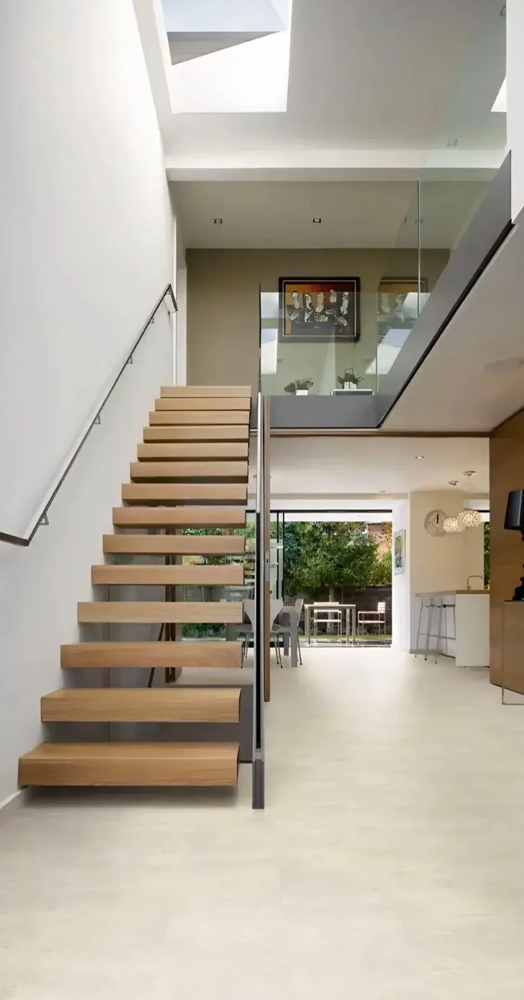
Escalier à marches en bois et structure métallique dans un intérieur lumineux, avec garde-corps vitré. 09 / Couverture & toiture
Le détail de la toiture La photographie rapproche la couverture, le contour de la lucarne et sa menuiserie. Une lecture des raccords et des matières.
Couverture Lucarne Menuiserie Parlons de votre projet 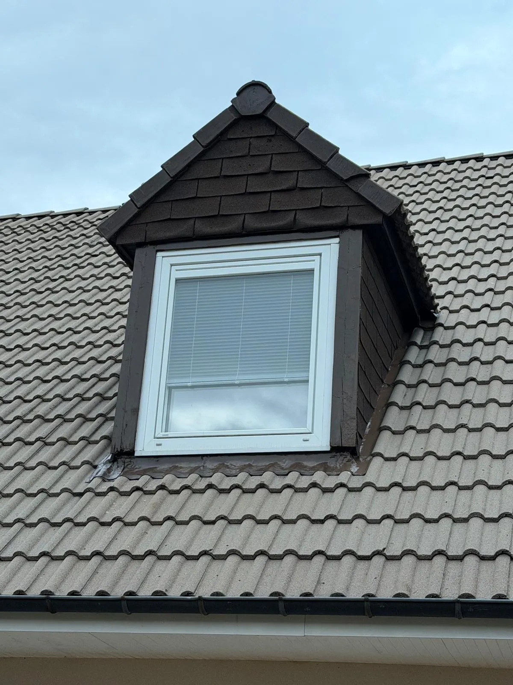
Lucarne avec fenêtre blanche et parement sombre au milieu d’une couverture grise. 10 / Menuiserie & extension
Une pièce de vie en plus Un espace vitré aménagé en séjour et salle à manger, ouvert visuellement sur le jardin.
Espace de séjour Grandes baies vitrées Éclairage intégré Parlons de votre projet 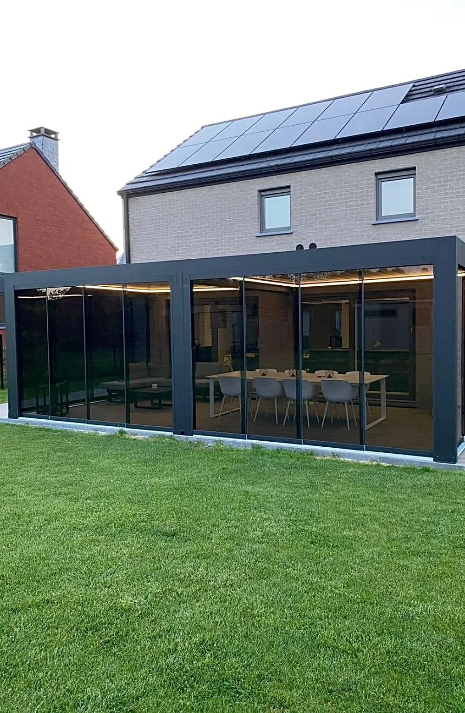
Extension vitrée aménagée en salle à manger et séjour, devant une pelouse. 11 / Façade & ravalement
La façade retrouve sa ligne La lumière souligne l’enduit clair du pignon, le contour du garage et les détails de la façade.
Enduit clair Pignon Encadrements Parlons de votre projet 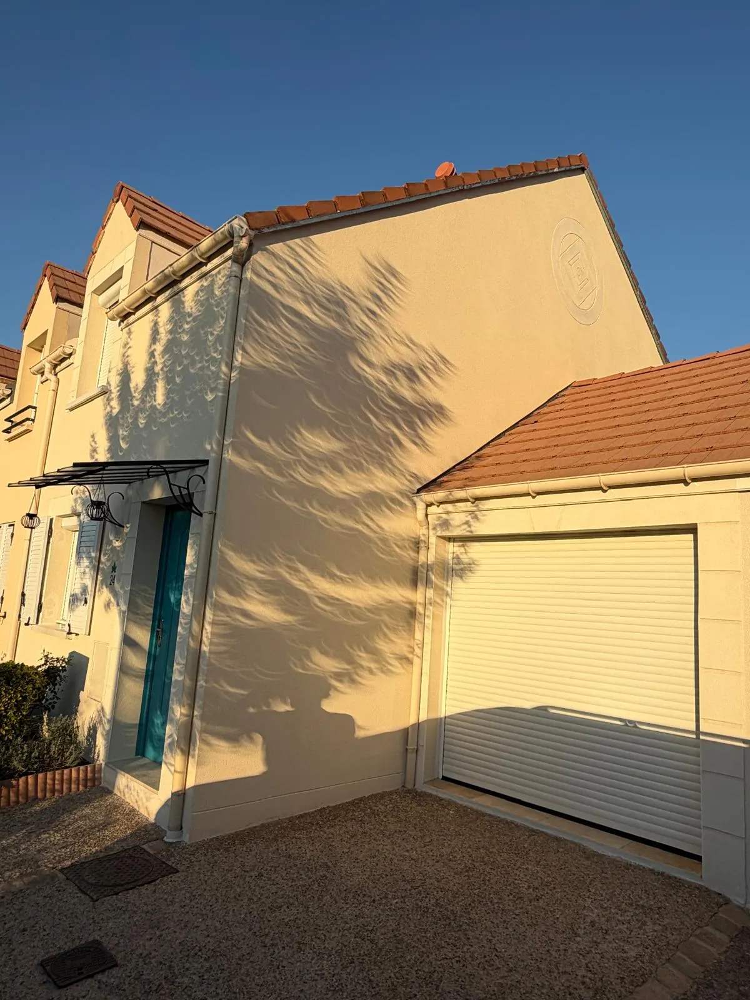
Façade claire et pignon au soleil, avec porte turquoise et garage fermé. 12 / Espaces professionnels
Carrelage en grande surface Un carrelage clair posé dans une grande surface. La photographie montre les lignes de joints et la continuité du sol dans les circulations.
Carrelage de sol Alignement des joints Circulations commerciales Parlons de votre projet 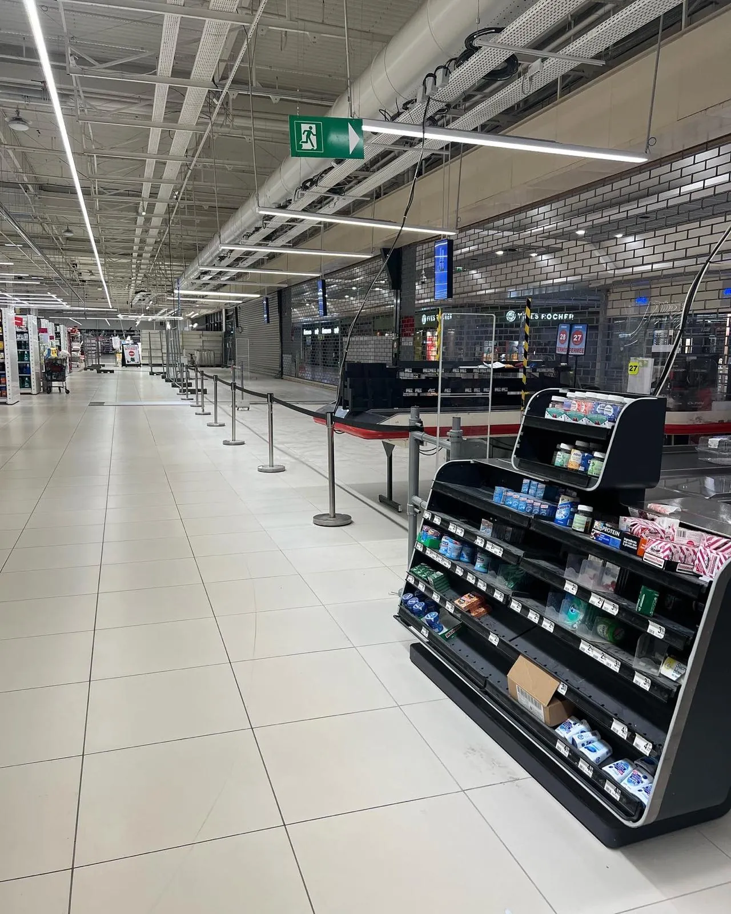
Carrelage clair du sol et alignement des joints dans une grande surface. 13 / Rénovation intérieure
Deux vasques, un ensemble Deux meubles vasques suspendus et leurs miroirs rétroéclairés font face à une douche vitrée. Les revêtements du sol et des murs composent un ensemble clair.
Meubles vasques suspendus Miroirs rétroéclairés Douche vitrée Parlons de votre projet 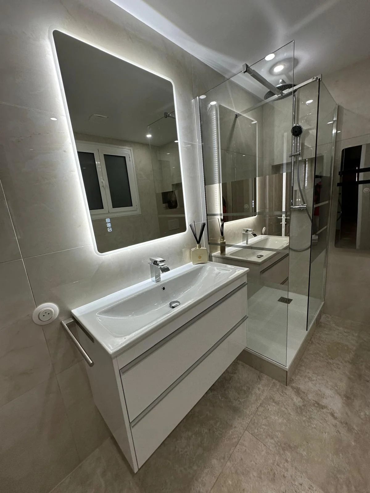
Deux meubles vasques suspendus, des miroirs rétroéclairés et une douche vitrée dans une salle de bains aux teintes claires.